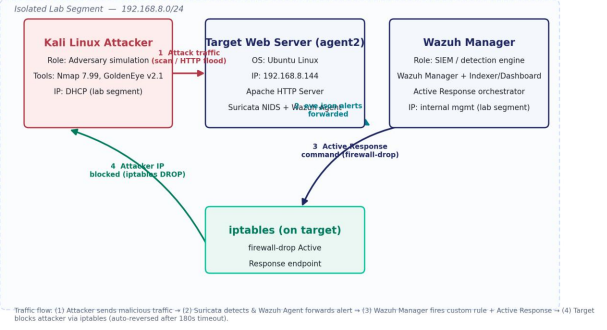
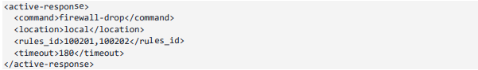

Software Engineer · Cybersecurity — Kigali, Rwanda
I build software.
I understand security.
I build practical digital products — and I spend just as much time thinking about how systems get attacked and how they should be defended. Development and defense, treated as one discipline.
What I Do
Software, security, and products
Software engineering
Full-stack web and mobile applications, REST APIs, authentication, and the data systems behind them.
Backend & systems
Django, Node.js, relational and document databases, asynchronous processing, and Linux-based systems.
Cybersecurity
Security monitoring, SIEM, log analysis, incident-response fundamentals, and system hardening.
Selected Work
A few things I've built
Two-sided marketplace
Proci — local services, made findable
Problem
Finding a reliable local service provider in Kigali usually comes down to word of mouth — there's no shared, trustworthy way to discover or vet one.
Solution
A Flutter marketplace where customers discover, book, and review providers, and providers manage jobs, profiles, and reputation in one place.
Engineering
Firebase auth & realtime data, a two-sided booking flow, and a review system that builds provider reputation over time.
Security notes
Firebase Authentication for identity, role-based access separating customer and provider permissions, and server-side validation on booking and review writes to limit abuse.
Farm operations platform
AgriSync Lite — farm management, simplified
Problem
Day-to-day farm operations — crop tracking, task assignment, finances — are usually managed informally, which makes them hard to plan around.
Solution
A lightweight web app that gives farmers one place to track crops, assign tasks, and monitor finances.
Engineering
Django REST Framework backend, a React + Vite frontend, and JWT-based authentication throughout.
Security notes
JWT-based authentication with token expiry, Django's built-in protections against common web vulnerabilities, and API endpoints scoped so farm data is only visible to authorized accounts.
Collaborative backend
Multi-User File Manager
Problem
Teams need a secure way to share and manage files together — with real accounts, permissions, and background processing, not just a shared folder.
Solution
A backend platform for collaborative file management with multi-user access control and a multilingual interface.
Engineering
Node.js/Express API, MySQL and MongoDB for persistence, and Redis-backed async task handling for background jobs.
Security notes
Multi-user access control so files and jobs are scoped to the accounts that own them, authenticated API routes, and Redis-queued background jobs kept isolated from user-facing request handling.
SOC lab — network defense
Cyber Defense Lab — detection to automated containment
Problem
Without centralized visibility, network attacks — reconnaissance scans, floods — go undetected until damage is already done.
Solution
Built and validated an intrusion detection and automated-response pipeline in an isolated lab, from raw network traffic to an auto-reversed firewall block.
Engineering
Suricata NIDS forwarding eve.json to a Wazuh Manager via an extended JSON decoder, with custom correlation rules mapped to MITRE ATT&CK and Wazuh Active Response driving iptables.
Security focus
Simulated an Nmap NSE reconnaissance scan (T1595) and a GoldenEye HTTP flood (T1498) from a Kali attacker VM. Both were detected within the same second by custom Wazuh rules and auto-contained via Active Response firewall-drop, with the block automatically lifted ~3 minutes later — a full detect → alert → contain → recover cycle with no manual intervention.


Cybersecurity
Building software is half the job. Defending it is the other.
SIEM & Log Analysis
Hands-on with Wazuh for security monitoring, log correlation, and threat detection — including a custom detection pipeline built end-to-end in the Cyber Defense Lab below.
Security Monitoring
Watching live alert streams and distinguishing real attack patterns from background noise.
System & Network Security
Linux administration and hardening, plus working knowledge of TCP/IP, DNS, DHCP, and HTTP/S.
Automated Response
Configuring Wazuh Active Response to contain threats — firewall-drop rules driven directly by correlated alerts.
Knowledge & training
Incident Response
Structured response to security events — detect, contain, investigate, report.
Application Security
Authentication, authorization, and secure API design — covered in training and applied in the security notes above.
Email Security
SPF, DKIM and DMARC, plus phishing awareness and common email-based attack patterns.
Malware Analysis
Foundational malware behavior, identification, and containment concepts.
Technologies
What's actually behind the work above
Languages
- Python
- JavaScript
- SQL
Frontend
- React
- Next.js
- Flutter
- HTML5 / CSS
Backend
- Node.js / Express
- Django / DRF
- REST APIs
Databases
- PostgreSQL
- MySQL
- MongoDB
- Firebase
Security & Infrastructure
- Wazuh / Suricata
- Linux administration
- Git / CI/CD
Experience
Where the work has happened
Employment history — see the Cybersecurity section for training.
2025 – Present
Field Researcher
Vanguard Economics Ltd — Kigali, Rwanda
- Collected and validated socio-economic data for development research using SurveyCTO
- Maintained data accuracy, confidentiality, and structured reporting under strict deadlines
Jan 2025 – Jul 2025
Software Engineer
PawaStats — Remote
- Designed and built REST APIs for analytics and reporting with Django REST Framework
- Built interactive dashboards in React.js and Next.js, and optimized PostgreSQL queries
Jan 2024 – Feb 2024
Web Developer
CodSoft — Remote
- Built responsive web applications with HTML, CSS, JavaScript, Node.js and Express
- Worked in sprint cycles with collaborative code review
Currently Exploring
What I'm spending my time on right now

About
Building practical technology out of Kigali
I'm a software engineer from Kigali, Rwanda, who likes turning real problems — local services, farm operations, data collection — into products that actually get used.
My work sits across the stack: React and Next.js on the frontend, Django and Node.js on the backend, PostgreSQL and MySQL underneath. Lately I've been pulling security into that same practice — SIEM fundamentals, log analysis, and Linux hardening — because I think the products worth building are also the ones worth defending.
Outside of shipping code, I've worked as a field researcher collecting socio-economic data, which taught me a version of rigor that carries straight into engineering: validate your inputs, document your process, don't cut corners on accuracy.
Contact